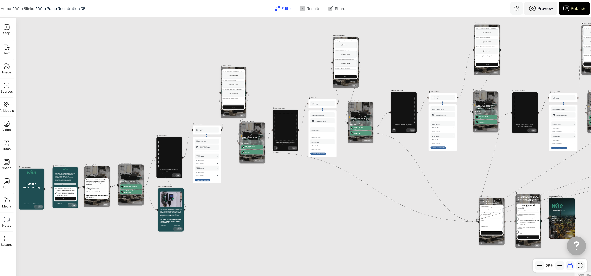
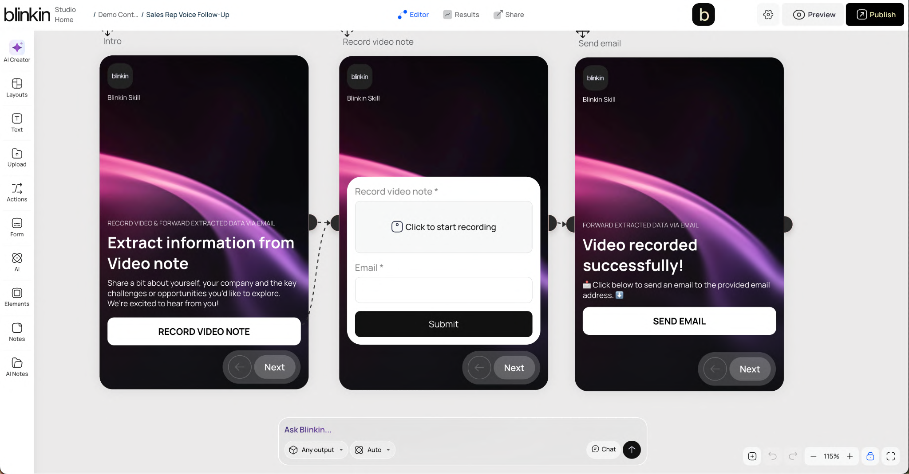

THE BLINKIN METHOD
Don’t vibe code
the important stuff.
When the experience matters, you need more than a fast first draft. You need a way to turn expertise into something repeatable, controlled, and alive.
See how it works ↓SUPERPOWER
What do you need?
Book an expert
THE SHIFT
Vibe coding is fun
until the vibe ships.
AI makes it easy to generate something. Blinkin makes it easy to make something that keeps working. A reusable build system, configured agents, governed knowledge, deterministic journeys, and a link you can share today.
A DIFFERENT KIND OF SPEED
Fast is good.
Repeatable is better.
Start with a prompt.
Hope it holds together.
- Beautiful first pass
- Logic hidden in the code
- Every change can break the last
- Hard to hand over or govern
- One-off output, then start again
Start with a pattern.
Make it yours.
- Repeatable layouts and components
- Every button can call an agent
- Knowledge and tools are explicit
- Testable paths and human control
- Publish a working link in minutes
THE BUILD LOOP
Adopt.
Adapt.
Build.
Start with what already works. Add the context only you have. Then make it a capability your organisation can run again and again.
Start with an agent that already knows the job.
Then give it your sources, your tone, your forms, your escalation path, and your definition of done.
THE PROOF IS IN THE BUILD SYSTEM
From one button
to a whole system.
Product registration. Video extraction. A meeting summary. A field diagnostic. Different jobs, same superpower: a visual experience with intelligence exactly where it belongs.



READY TO MAKE IT REAL?
Your next great app
already knows its shape.
Bring a real workflow or start from a template. In minutes, you can have a branded, agent-powered experience ready to test and share.
Build with Blinkin ↗Back to the app builder ↗